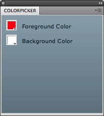

Color Picker Panel: Create Custom Icons
The fifth part of the Color Picker Panel is customizing the icons of the Adobe Photoshop Panel when it is minimized, closed, or hiding in Adobe Photoshop. This section of the Color Picker Panel tutorial will show how to use Portable Network Graphics (PNG) images as normal and rollover icons for the Adobe Photoshop Panel.
Instructions:
- To develop custom icons for the Color Picker Panel, images must be in Portable Network Graphics (PNG) format. Each image must have the name of the Panel followed by either (but not both) of the following keywords:
- Normal - Used during normal or no-event state.
- Rollover - Used during mouse rollover state.
- ColorPickerNormal.PNG
- ColorPickerRollover.PNG
- Save ColorPickerNormal.PNG and ColorPickerRollover.PNG into the Panels folder under the Adobe Photoshop CS5\Plug-ins\ folder located under:
- Applications for Macintosh
- Program Files for Windows
- Copy ColorPickerNormal.PNG and ColorPickerRollover.PNG from the Panels folder into the bin-debug folder under the ColorPicker folder on the Desktop.
- Open Adobe Photoshop.
- If the Color Picker Panel is not already open, go to Windows > Extensions > ColorPicker. The Color Picker Panel opens as a panel like seen below:
 - Click on the top-right corner of the Color Picker Panel. The Color Picker Panel minimizes and is like a panel as seen below:
- Place the mouse over the Color Picker Panel and now the panel changes to what is seen below:
- Click on the Color Picker Panel and now the panel changes to what is seen below:
- The Color Picker Panel now has two color pickers, two labels, and custom icons in which the user can change the background or foreground colors either on the Adobe Photoshop Panel or within the Adobe Photoshop tools palette.
- Close the Color Picker Panel.
- Close Adobe Photoshop.